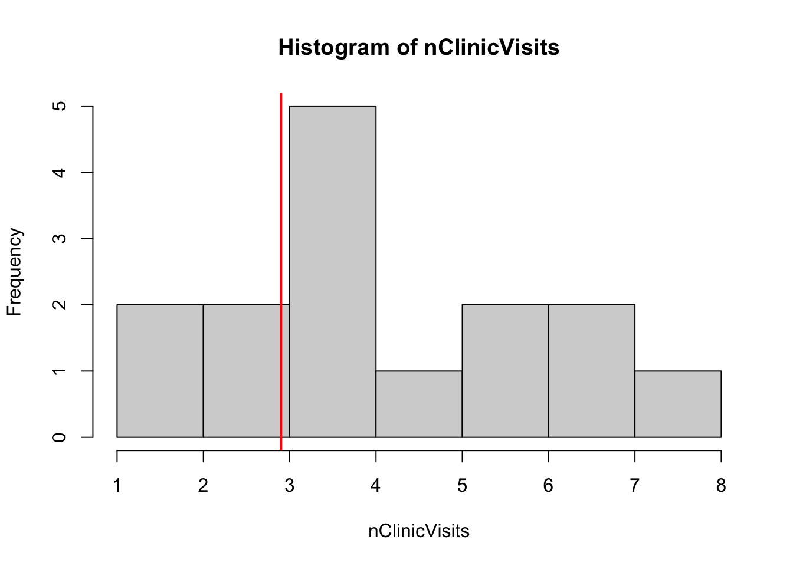
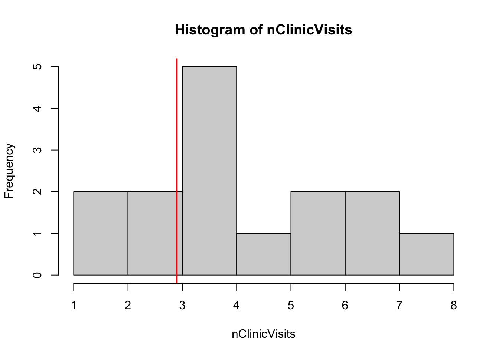
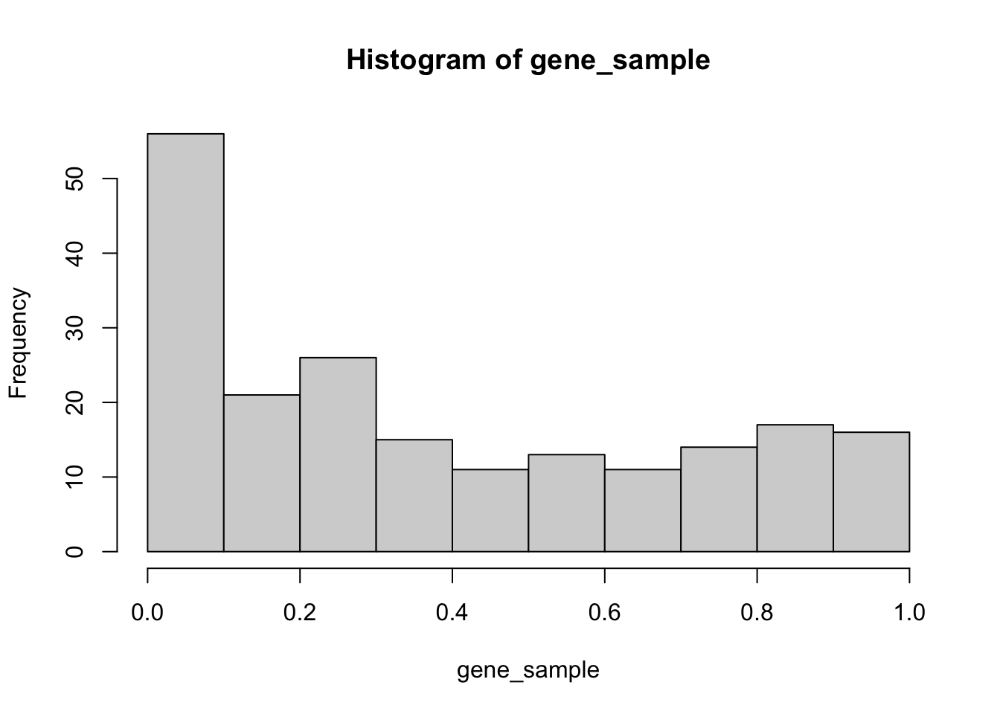

set.seed(123)
N <- 15
nClinicVisits <- rpois(n = N, lambda = 4)
# Plot the data and visually compare to the county median.
hist(nClinicVisits)
abline(v = 2.9, lwd = 2, col = "red")
The one-sample Wilcoxson Signed Rank Test is used to compare a sample proportion to a population proportion.
Let’s assume that we have one sample of size \(n\), \(x_1, x_2, \ldots, x_n\), which cannot be approximated by a normal distribution. Because of this, we are no longer comparing \(\bar{x}\) to \(\mu\), but we are instead asking if the sample median is equal to a population median, \(M\). For more detail, see the maths here: https://en.wikipedia.org/wiki/Wilcoxon_signed-rank_test.
Here are the steps to calculate this test statistic manually:
Consider a simple example: we want to ask if the number of people visiting a local clinic per hour is different from the county median of 2.9 visits per hour. Here is a small sample of simulated (non-normal) data:
set.seed(123)
N <- 15
nClinicVisits <- rpois(n = N, lambda = 4)
# Plot the data and visually compare to the county median.
hist(nClinicVisits)
abline(v = 2.9, lwd = 2, col = "red")
Now let’s go through our steps:
steps_df <- tibble::tibble(x = nClinicVisits)
# 1. shift the sample by the population median
steps_df$xStar <- steps_df$x - 2.9
# 2. absolute value
steps_df$absXStar <- abs(steps_df$xStar)
# 3. ranks
steps_df$xRank <- rank(steps_df$absXStar)
# 4. signs x ranks
steps_df$signRank <- sign(steps_df$xStar) * steps_df$xRank
# Inspect our steps
steps_df# A tibble: 15 × 5
x xStar absXStar xRank signRank
<int> <dbl> <dbl> <dbl> <dbl>
1 3 0.100 0.100 1.5 1.5
2 6 3.1 3.1 11.5 11.5
3 3 0.100 0.100 1.5 1.5
4 6 3.1 3.1 11.5 11.5
5 7 4.1 4.1 13.5 13.5
6 1 -1.9 1.9 9 -9
7 4 1.1 1.1 6 6
8 7 4.1 4.1 13.5 13.5
9 4 1.1 1.1 6 6
10 4 1.1 1.1 6 6
11 8 5.1 5.1 15 15
12 4 1.1 1.1 6 6
13 5 2.1 2.1 10 10
14 4 1.1 1.1 6 6
15 2 -0.9 0.9 3 -3 Now we can calculate the Wilcoxon Signed Rank test statisic and compare it to its asymptotic \(p\)-value.
# 5. Compare sum to normal distribution and calculate the p-value
oneTailP <- pnorm(
q = sum(steps_df$signRank),
mean = 0,
sd = sqrt((2 * N + 1) * (N + 1) * N / 6)
)
(1 - oneTailP) / 2[1] 0.001601623How does this compare to the exact distribution \(p\)-value?
wilcox.test(x = nClinicVisits, mu = 2.9)Warning in wilcox.test.default(x = nClinicVisits, mu = 2.9): cannot compute
exact p-value with ties
Wilcoxon signed rank test with continuity correction
data: nClinicVisits
V = 108, p-value = 0.00672
alternative hypothesis: true location is not equal to 2.9Now that we have seen how the test works, we will apply it to a real data scenario. We will use gene-level \(p\)-values from the Golub and Van Loan (1999) data set from the R package multtest:: (https://rdrr.io/bioc/multtest/man/golub.html); the original is a data set of data set of gene expression values for leukemia, but we have gene-specific \(p\)-values from a gene-level hypothesis test. We created these \(p\)-values in the script R/create_golub_data_20240523.R, but they do not represent any real analysis results.
Because our method requires only one sample, we have very little work to do. We import the data set of \(p\)-values.
golub_pVals_num <- readRDS(file = "../data/02_golub_pVals_20240523.rds")There are 3051 \(p\)-values. The null hypothesis would be that there is no statistically significant effects in the data, so the distribution of these \(p\)-values should be a Uniform distribution. Our hypothesis is that the population mean is then 0.5 (the average value of a Uniform distribution).
To use a one-sample Wilcoxson Signed Rank Test, we make the following assumptions:
If these assumptions hold, then the test statistic is asymptotically normal. If your data has lots of zeros or equal values (which would result in tied ranks), then use this method with caution.
These are gene-level \(p\)-values, so we do not have “independence”. However, because this is a pedagogical example, we will take a random sample of these genes to test (and this random sample should be independent enough, but we have no guarantee of this).
What does the data distribution look like?
hist(gene_sample)
Remember, this is a “fake” analysis (all 38 samples in this data are leukemia cases, and I tested one half against the other—there should absolutely NOT be any real biological signal in this data).
These values are \(p\)-values, so they can be ranked.
Now that we have checked our assumptions, we can perform the Wilcoxson Signed Rank Test on random samples of the genes to test if they have an average value of 0.5.
wilcox.test(
x = gene_sample,
mu = 0.5, # average from all theoretical p-values under H0
alternative = "less" # H1: random p-values < 0.5
)
Wilcoxon signed rank test with continuity correction
data: gene_sample
V = 5859, p-value = 1.584e-07
alternative hypothesis: true location is less than 0.5The \(p\)-value for this test is less than 0.05, so we reject the hypothesis that the average gene-specific \(p\)-value for this set of results is greater than or equal to 0.5 (the theoretical average of \(p\)-values under the null hypothesis).